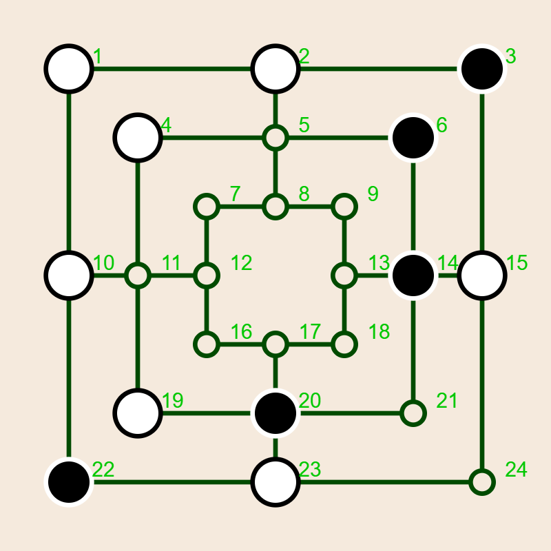
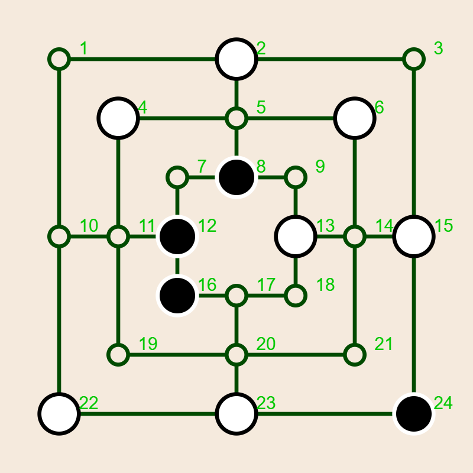

The Game of Mill:  Instructions
Instructions
User Manual
This page serves as a comprehensive manual for users, explaining what the software can do, and how to use it. Its contents are arranged in a sequence matching the arrangement on the
Table of contents
The computer algorithm ↩
A rudimentary understanding of how the computer plays is useful for understanding how to use the controls. For more detailed information a complete description of the algorithm is available. Here is an extremely terse introduction: The moves available to the computer form a tree rooted at the current board position. The computer examines that tree to a certain depth. It uses a formula (the
There are many references to
The following Table illustrates the performance of the computer algorithms on my particular Windows 11 machine. The software offers two engines, one written in JavaScript (JS), and one written in C++. The C++ version is much faster than the JS version. However, while the JS version works with essentially any browser, the C++ engine may not work on your particular computer. It requires a compiled version of the C++ code that is part of the package.
There are two blocks in the Table, the first one corresponding to the C++ engine, the second corresponding to the JS version. The Table shows data for a computation of the first move (with the opening book being turned off). The main columns go with the depth of the computer search. That depth is measured in plies, i.e., half moves. A move consists of a ply performed by White, followed by a ply performed by Black. The row headed
| Metric | Engine | Depth 2 | Depth 4 | Depth 6 | Depth 8 | Depth 10 | Depth 12 |
|---|---|---|---|---|---|---|---|
| Nodes | C++ | 96 | 5,859 | 622,771 | 11,044,969 | 158,178,627 | 3,585,455,835 |
| Time (ms) | C++ | 12 | 14 | 63 | 824 | 12,090 | 283,492 |
| Nodes/Time | C++ | 8 | 419 | 9,886 | 13,404 | 13,084 | 12,648 |
| Time Factor | C++ | 1 | 4 | 13 | 15 | 23 | |
| Nodes | JS | 96 | 5,859 | 619,556 | 10,515,717 | 116,666,470 | 2,118,151,527 |
| Time(ms) | JS | 14 | 33 | 445 | 7,813 | 141,598 | 27,562,078 |
| Nodes/Time | JS | 7 | 178 | 1,393 | 1,346 | 824 | 77 |
| Time Factor | JS | 2 | 13 | 18 | 18 | 195 | |
| Time | JS/C++ | 1 | 2 | 7 | 9 | 12 | 97 |
It is evident that the C++ engine is significantly faster than the JS engine, by a typical factor 10. The initial factors 1 and 2 are not significant because the times involved are mostly determined by overhead. For depth 12 the JS engine technically succeeds in computing the move, but it is virtually useless since it takes almost 8 hours for the calculation. The reason why C++ is generally faster is that it is a compiled language while JS is interpreted. The basic reason why JS fails at depth 12 is that C++ has a much more efficient way than JS of handling arrays, and JS runs into memory limitations at that stage.
Note that the complexity of the game tree varies greatly with the board state. After all pieces are on the board, and many are blocked, the branching factor in the tree is much smaller, and a given depth requires less time. This is clearly visible if you play a game with time (rather than depth) controls. In the middle game the computer will do a much deeper search than earlier in the game.
The game page ↩
To understand the following discussion of the game controls it is best to bring up the actual game page in a different window, but you can also use this static image:

The image shows the
If you are are not familiar with the game of mill there is a page with game rules here.
The particular image above shows the window after a match between
The system clock ↩
The top row of the game table contains the
The key parameter for the clock is the
A typical time for a search depth of 8 is less than a second, whereas for a search depth of 10 it may be a significant fraction of a minute. The system can technically search at depth 20, but it would take you several years to see the answer.
Note that the system clock measures
The game board ↩
Below the system clock there are three columns. The leftmost column consists of only one row, containing the
Status window and console ↩
At the top of the second column is the
Selecting players ↩
In the two rows below the message window you can specify the current players. They may be human (you!), any of the built-in AI players, or an AI player that you import or create yourself. In the image, the White player is Arwen, and the Black player is Bilbo.
For each computer player, you can specify one of four modes.
More significant is the menu labeled
Move and board scores ↩
The next two rows let you evaluate the current board state, or generate a ranked list of possible moves on the current board. The two menus let you select the depth of each evaluation. Clicking
Playing at random ↩
At every ply, the computer computes all possible moves and assigns a score to them. Sometimes there are several moves with the same best score. By default the algorithm will play a move randomly selected from the top group. You can make it always pick the first by clicking on the next button, labeled
Graphical aids ↩
The controls in the next row let you
-
LAB , the numerical labels on the board. These play a central role in the computer code, and they may be useful for discussing a game, but they are not needed for actual game play. -
Elgb , for eligible. When on, upon entering the board with the mouse, the system will mark the locations that can be used for the next option, e.g., placing a stone, moving a stone, or removing a stone. -
HLight , for highlight. When on, the system will mark the last move on the board by drawing one or two yellow (technically, gold) circles.
Collecting data ↩
In the next row, labeled
-
Stats , off by default, will print the number of nodes visited at every depth, after each move, on the console. - Similarly,
CPU , short for CPU time but it’s actually wall clock time, will turn on or off a report of the time used for each move. -
Game will cause a concise list of board states after each move of the current game to be listed on the console. This will consist of an array with 25 entries. The first entry (counted as entry 0) is the ply count of the move, for the remaining entries, 1 means the vertex is blank, 2 means it is occupied by White, and 3 means it is occupied by Black. - Clicking on
Board will cause the system to upload a png image of the current game board. This facility was used to generate some of the images in these web pages, and you can use it to send an image to your friends, so they can appreciate your cleverness.
Parallel processing ↩
The next row, labeled
My own system provides 32 threads. With some coaxing I was able to keep them all busy at close to 100 percent, which eventually caused the CPU board to overheat and crash the system. However, the savings as far as the time required for the computation of a move, and the number of nodes visited is not nearly as dramatic.
To illustrate this I had the system compute the first ply at depth 10, with the number of workers ranging from 1 to 32. This chart shows wall-clock time shown in milliseconds, plotted against the number of workers, on a log-log scale:

The dashed gray line shows what one would naively expect. The total time required by n workers should equal the time required by one worker, divided by n. The jagged blue graph shows the actual time required by the workers. 32 workers are in fact faster than 1 worker, but only by a factor 10 or so, not by a factor 32. There are several reasons for the discrepancy. The workers do not communicate directly with each other, and there is a delay in making their results available to the other workers. This causes extra work for all workers. There is also a certain overhead in running the workers. The jaggedness of the blue line is due to random effects in distributing parts of the game tree to individual workers and their pruning of their subtrees.
Increasing efficiency ↩
The next line, starting with a button labeled
-
α/β pruning: every board position has a numerical score. White tries to pick moves that maximize the score, and Black tries to minimize the score. If White has analyzed the game tree to the point that it knows it can obtain a score ofat least α = 100 with its next move, and it examines a node for which it knows that Black at that node can get a score ofat most β = 50 , then White will never consider making a move leading to that node, because Black will never allow White to go there. White can, and will, ignore the part of the game tree rooted at that node. This kind of pruning saves massive amounts of computations. If there are several possible moves leading to different positions, but with the same maximum score, pruning may affect the final position, and the corresponding move, but not the score of that position.You can use this button to turn off α/β pruning. But you would want to do this only to impress yourself or your friends with the phenomenal effectiveness of α/β pruning.
-
Transposition Table . Most board positions can be attained in more than one way. A transposition table keeps track of positions that have already been visited and makes it possible to utilize the analysis already applied to that position at an earlier stage. The button labeledTT lets you turn off the internal transposition table. You may want to do this when using the JavaScript engine. JS handles arrays inefficiently (unlike C++) , and a browser can be stingy with memory allocations. Managing the TT can lead to memory problems and even crash your session.The text field labeled
TT(m) lets you specify the size of the TT in millions of nodes. Increasing it makes the code more efficient, and also increases the risk that it will run into memory problems. -
The Opening Book . It seems pointless to recompute the first few moves every time you play a game, particularly since, to paraphrase Horatio Nelson, during the first four plies you cannot go far wrong by placing your piece on any empty four-way intersection. An opening book is a table that tells for a number of early game positions which move to make at that position. The opening book that comes with the code is small, it covers only the first four plies of the game. There are 479 of them, and the moves to be taken for each of them were computed at depth 8. You can compute your own opening book, but it will take a long time, and you will need to keep your browser window open and visible during that time. To use your own book you’ll need to download the files for this page and place them onto a web server that you have access to. To create your own book select the initial number of plies and the depth at which the moves are computed. Clicking on the button labeledcreate OB will compute the book and download a file namedmillOB.json to your system. Place it in the same directory that contains your HTML files. -
Symmetry: There are some obvious symmetries in the Mill Board. For example, a rotation by 90 degrees does not change the layout of the board. In fact there are only four truly distinct options for making the first move: play on a four way intersection (5, 11, 14, or 20), play on a three way intersection (2, 8, 10, 12, 13, 15,17, 23,19, 21), play on a corner (1, 3, 7, 8, 16,17, 22, or 24) or play on one of the interior corners 4, 6, 19, and 20. It turns out that there are a total of 16 symmetry transformations that do not change the layout of the board. For the first move, clearly it should suffice to investigate only one position in each set. The advantages of symmetry diminish as the game proceeds and the board position gets more complicated, and less symmetric. Keeping track of symmetry is computationally expensive. (The system applies all 16 similarity transforms to each board position obtained by making a single ply, computes a hash code of the resulting position, takes note of the smallest of those codes, and then sees if that code has occurred previously.) Thus you may wish to reduce the number of plies where symmetry is being taken into account. In the text field labeledS: you can set the ply at which the code stops using symmetry to find the best move. The maximum possible choice for that cutoff is 19, which is also the default. In that case the code will take advantage of symmetry during the entire initial placement phase, i.e., the first 18 plies of the game. Setting it to zero will make sure the computer never uses symmetry.
| Depth | none | S | S+α/β | S+α/β+TT | ↩ |
|---|---|---|---|---|---|
| 2 | 576 | 192 | 192 | 192 | |
| 4 | 267,744 | 44,624 | 10,428 | 5,859 | |
| 6 | 102,277,344 | 17,447,118 | 924,851 | 648,947 | |
| 8 | 31,500,832,224 | 6,010,574,862 | 36,747,175 | 11,753,982 | |
| 10 | 7,622,973,656,544 | 1,800,000,000,000 | 1,072,674,057 | 164,095,689 | |
| 12 | 1,402,556,105,125,344 | 540,000,000,000,000 | 27,450,718,752 | 3,587,306,472 |
Note the extraordinary effectiveness of α/β pruning. Using symmetry, for depth 10, it reduces the number of nodes by a factor of approximately 17,000. For depth 12, the corresponding factor is almost 20,000, and it is amplified by a factor 8 using the Transposition Table. For the last entry in the last row, my computer really did visit three and a half billion nodes, at the blistering rate of about 16 million nodes a second.
AI players ↩
The next few rows let you play tournaments of AI players, edit AI brains, and start a simulated
Static evaluations ↩
The formula for that static evaluation is
V = - WGS × ΔGS + WN3 × ΔN3 + WN4 × ΔN4 + WM1 × ΔM1 + WM2 × ΔM2 + WFB × ΔFlyBonus
+ WPD × ΔPD + WMill × ΔMill + WDM × ΔDM + WNMF × ΔNMF + WNMR × ΔNMR + WNMG × ΔNMG
The variables Wsubscript represent the weights (or importance) the AI assigns to different aspects of the game. For example, a brain with a high WM1 will play aggressively for open space, while one with a high WPD will prioritize capturing pieces above all else.
The
The specific
- GS (Group Score): This is the number of groups of a player’s pieces such that no member of one group can visit a member of another group by moving along empty squares or a vertex occupied by a piece of the same color. It provides a measure of fragmentation. The AI is penalized (hence the minus sign) for having its stones scattered into disconnected groups of pieces that cannot support each other.
- N3 (Node 3): The number of pieces sitting on a three way vertex.
- N4 (Node 4): The number of pieces sitting on a 4-way intersection.
- M1 (Mobility 1): The sum of the number of empty neighbors of each piece.
- M2 (Mobility 2): The sum of the number of empty vertices that a piece can reach in two moves.
-
FB (FlyBonus): A bonus applied if the player has exactly 3 stones (the "Flying" phase), reflecting their sudden ability to
fly anywhere. - PD (Piece Difference): The number of pieces.
- Mill: The number of active mills currently on the board.
- DM (Double Mill): The number of double mills, which allows for forming a mill on every turn.
- NMF (Near Mill Filled): Two pieces in a line where the third spot is occupied by the opponent but can be captured.
- NMR (Near Mill Ready): Two pieces in a line where the third spot is empty (a potential mill).
- NMG (Near Mill Guaranteed): Two pieces in a line where the third spot can be occupied in the next move, without the opponent being able to prevent it.
|  |

|

|
 |
| Group score | Double mills | Double mills | Near mills |
These concepts are illustrated in the four boards above. On the leftmost board, both Black and White have two separated
The following table lists the specific weights assigned to the different AI personalities defined in the software. These values determine the strategic character of each player.
| Name | GS | N3 | N4 | M1 | M2 | FB | PD | Mill | DM | NMF | NMR | NMG |
|---|---|---|---|---|---|---|---|---|---|---|---|---|
| Arwen | 62 | 13 | 33 | 178 | 4 | 78 | 552 | 18 | 1000 | 10 | 98 | 626 |
| Bilbo | 47 | 13 | 31 | 153 | 4 | 33 | 480 | 24 | 1000 | 12 | 52 | 531 |
| Celebrian | 79 | 16 | 48 | 184 | 4 | 92 | 733 | 22 | 1000 | 10 | 116 | 713 |
| Dwalin | 37 | 11 | 29 | 145 | 3 | 30 | 452 | 24 | 1000 | 15 | 54 | 508 |
| Eowyn | 81 | 15 | 49 | 267 | 4 | 89 | 741 | 28 | 1000 | 12 | 57 | 856 |
| Frodo | 55 | 13 | 32 | 162 | 4 | 56 | 516 | 21 | 1000 | 11 | 75 | 579 |
| Galadriel | 50 | 15 | 30 | 10 | 4 | 300 | 1000 | 100 | 500 | 10 | 20 | 30 |
| Hamfast | 1000 | 1000 | 1000 | 1000 | 1000 | 1000 | 1000 | 1000 | 1000 | 1000 | 1000 | 1000 |
| Indis | 0 | 0 | 0 | 0 | 0 | 0 | 0 | 0 | 0 | 0 | 0 | 0 |
| Jolly | -62 | -13 | -33 | -178 | -4 | -78 | -552 | -18 | -1000 | -10 | -98 | -626 |
The weights are normalized so that the maximum weight is 1000. The players are sorted roughly by decreasing playing ability.
You may recognize the names of the brains which replace the standard Alice, Bob, ... sequence. When first starting to create the AI players I guessed some suitable parameters which are now Galadriel's parameters. The parameters of the first AI player were all created, going back to Galadriel in some way or other, by the evolution algorithm that is part of the software. Frodo's parameters are the average of Arwen's and Bilbo's parameters.
The last three players were added for fun and for experimental purposes.
Silence is golden ↩
Returning to the controls in the middle column of the Game Page, the next row contains only one button, prominently labeled
Whether you do or do not display the games, keep in mind, however, that browsers typically limit the access of a page if the page is not at least partly visible on the screen. So if you want to run a tournament or an evolution overnight make sure your computer stays on and the board shows on the screen.
Dealing with brains ↩
The next three rows let you
Modifying a brain ↩
You can freely
Brain improvement ↩
You can attempt to
To run the evolution proceed as follows:
-
Select a Brain: Choose a brain from the menu labeledBrain to edit or improve. - In the first text field to the right of the Brains Menu, pick the number of generations. This choice is not critical, since any successful mutation is uploaded and saved as soon as it is found. So you can interrupt the ongoing evolution at any stage without losing any information.
- In the next text field, set the number of games in the tournament. The AI will play that number of games twice, once with the mutant being White, once with it being Black. 10 games strike a reasonable balance between reliability and efficiency.
- In the rightmost
Percent: Set Max percentage change. For refinements of an existing successful brain 5% is a good choice. If you start with a very rough approximation you can choose a higher percentage. The applied percentage may be adjusted by the system as the evolution proceeds. -
Start: Click on the button labeledImprove . - Once an improved mutation is found the AI will download a JavaScript file defining the mutation, and suitable for pasting into a JS code. The file will appear where your downloads usually appear, e.g., in your
Downloads folder.
Import/export brains ↩
The next line lets you import or export a comma delimited spreadsheet with a specified list of
Running a tournament ↩
The next three lines let you design and
- Select the search depth for the games, using the two menus labeled
Time below the status window. You can choose time mode as well but keep in mind that time means wall clock time and that the game will run much more slowly when the Game Page is invisible, for example, when you temporarily use your computer for other purposes. I usually run tournaments at depth 6. You can have different search depths for White and Black. - Choose the number of games played by each pair of players. Keep in mind that there is a great deal of randomness in the moves made by the players, and that most games are draws. If you really want to know which players are better choose a large number like 100 games per pair.
- Choose the participants using the selection buttons labeled with the first letters of the players’ names.
- Click on
run tournament. - The code will have each player play the specified number of games, once as Black and once as White, against every other player. When the tournament is over it will upload a comma delimited spreadsheet to your computer. You can see the results of a depth 6 100 game tournament among the player listed here. The ordering of the computer brains is based on that tournament, rather than vice versa. The names of the computer brains were assigned after the tournament.
Setting up a board ↩
The next to last row in the second column lets you create specific board scenarios for computer analysis. Start by clicking on the setup board button. This will interrupt any ongoing game and change the color of the board. The current board state remains unchanged. You can then click on any vertex and cycle through the three possible states (White, Black, empty) of that vertex. The ply number in the text field next to the setup button determines whose play (even is White, odd is Black) it is, and whether the game is in the placement (ply count ≤ 18) or moving phase (ply count > 18). If you just want to continue the game you don’t need to do anything. However, you can change the current ply number by entering its new value in the text field. To finish the set up process click again on the setup board button.
As mentioned above, the last row lets you create an opening book.
Switching engines ↩
The remaining controls are located in the third column of the Game Page. The first row lists the version number and the engine of the code. This is actually a button that lets you switch the engines. I originally started writing this software entirely in JavaScript. JavaScript is the language of choice for designing interactive web pages. However, letting the parallel worker calculations be handled by compiled C++ code makes the game much more efficient. You want to use the C++ engine if you can, and use the JS version only if you have to, or if you want to compare the performances of the two engines.
Playing and resetting ↩
The next row contains the
The
The game table ↩
At the bottom of the third column is the Game Table. It lists the moves as they happen. Each row of that table lists
- In the column headed
n , the number of the ply. The Game Board shows the status after that ply is applied. - The column headed
P lists the player whose move it is. This is actually a button. Clicking on it will interrupt the game if it is ongoing, and will display the board state after that particular ply. You can then step through the game using theForward andBackward Buttons above the game table, change player parameters, or modify the board. You can resume the game, with the changes applied, by clicking on thePlay button. - The action of that ply is described in the next three columns, headed by
p ,q , andx .p denotes the vertex where a stone was placed or a move was started. If the action is an actual movement,q denotes the destination of the moved stone.x denotes the location of any opposing stone that is removed. - The columns headed
w andb contain the numbers of White and Black pieces after the ply. - The last column of the game table gives the static evaluation of the board after the ply. Recall that you can obtain a deeper level evaluation by using the
Evaluate Board button.